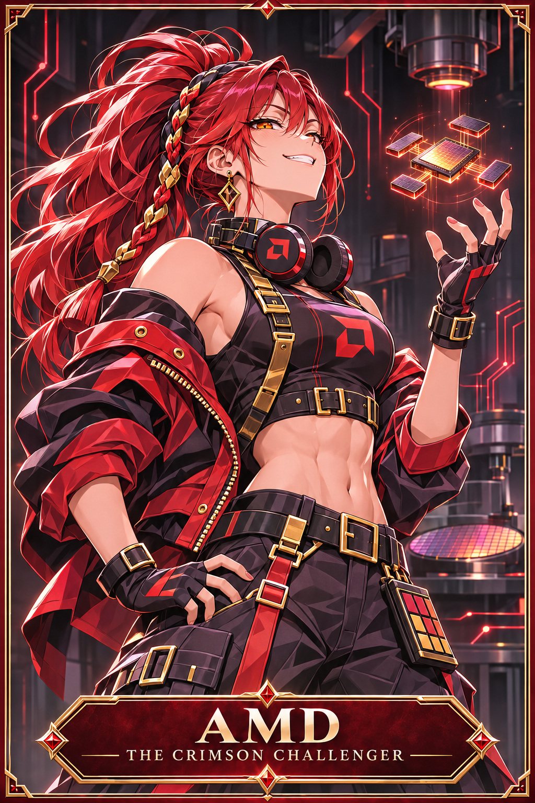

2D skeletal rig
Issue #70 · interactive original-vector technique study · NOT final character art or approved animation
0.00s
Mechanism: relative shoulder/elbow pivot rotation and pose limits. Editable beat source · Generated art board
 Intel: canon reference (unchanged)
Intel: canon reference (unchanged)
AMD: canon reference (unchanged)Not yet production-ready: Schematic pivot animation only. Godot skeletal/mesh scene and 30-second render remain outstanding.